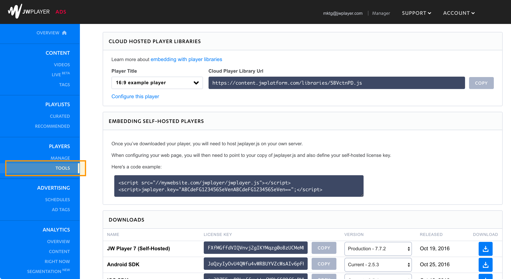
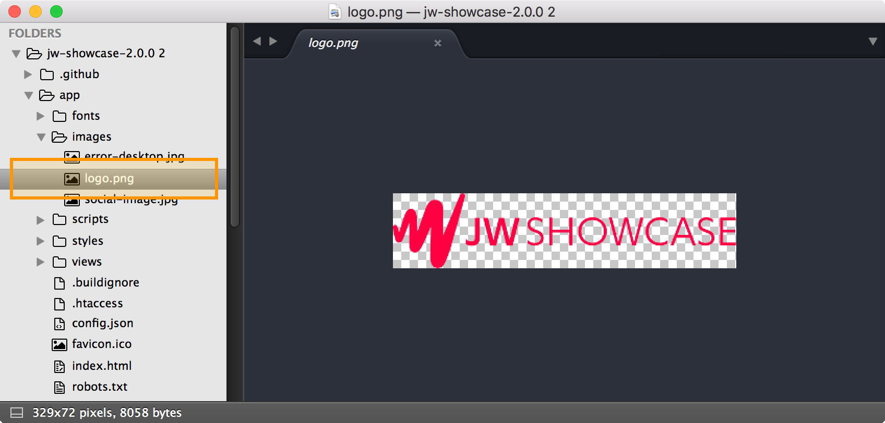
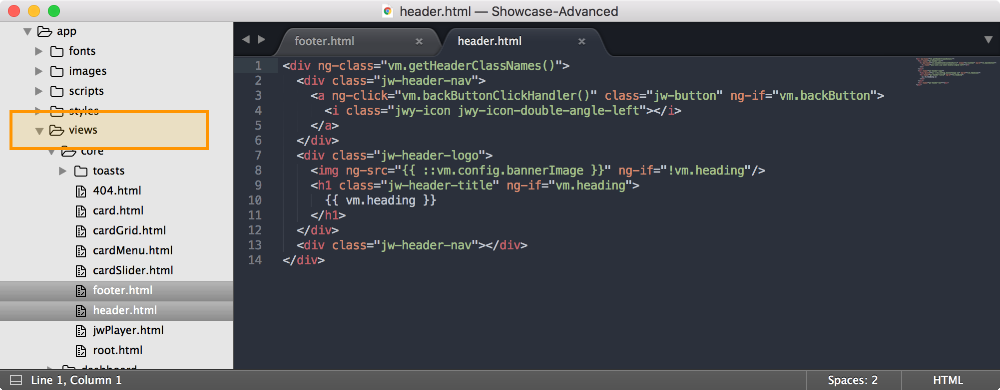
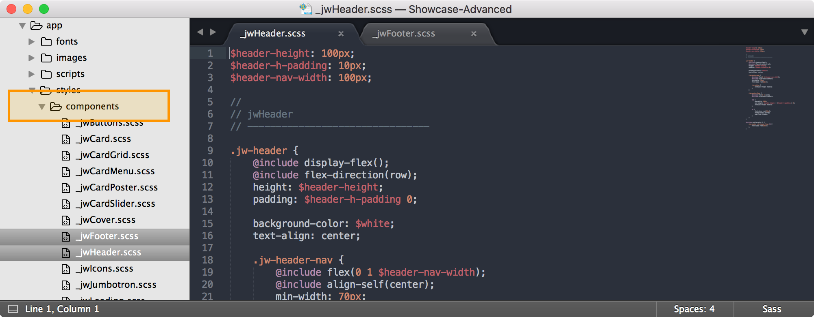
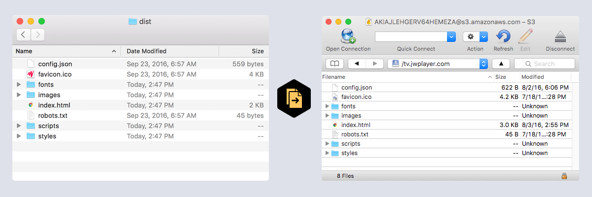

Getting Started with JW Showcase for Web
JW Showcase is a sample application that leverages playlists from JW Platform to distribute your content across platforms. This guide will provide instructions for getting set up with our web app.
For advanced configuration and customization, we recommend cloning the JW Showcase source code within Github. Modifying the cloned source gives you greater control over the app framework and allows you to keep your Showcase app in sync with our source repository as we add new features and bug fixes. For instructions on basic configuration of the precompiled static app, see our Support article.
Download the latest version
Clone the source code from: https://github.com/jwplayer/jw-showcase
After cloning you’ll need to install the following tools globally on your machine:
$ gem install compass
$ npm i grunt-cli -g
$ npm i bower -g
Install project dependencies for Bower and Node:
cd /path/to/showcase-source-code/
$ npm install
Configure Your App
Open the JW Showcase source code in any text editor and navigate to the config.json file located in the “app” folder.

Here you’ll need to replace the sample “player”, “featuredPlaylist”, and “playlists” with media ids from your library within the JW Player dashboard.
{
"player": "DTYxzkKG",
"theme": "light",
"siteName": "JW Showcase",
"description": "JW Showcase is an open-source, dynamically generated video website built around JW Player and JW Platform services. It enables you to easily publish your JW Player-hosted video content with no coding and minimal configuration.",
"bannerImage": "images/logo.png",
"footerText": "Powered by JW Player",
"backgroundColor": "",
"featuredPlaylist": "lrYLc95e",
"playlists": [
"WXu7kuaW",
"Q352cyuc",
"oR7ahO0J"
]
}
To locate your player ID, navigate to “Tools” under the “Players” section of the dashboard.

Select the player you wish to use for your app under “Cloud Hosted Player Libraries”. The library URL for that player will contain your player ID.

Replace the ID in the config.json file with your own, ie:
"player": "DTYxzkKG",
Next, to set your “featured playlist” and “playlists” for the app, navigate to “Curated” under the “Playlists” section of the dashboard.

Click into any playlist you wish to feature in your app and grab the playlist ID from the top of the playlist detail page.

Replace the “featuredPlaylist” and “playlists” IDs in the config.json file, ie:
"featuredPlaylist": "lrYLc95e",
"playlists": [
"WXu7kuaW",
"Q352cyuc",
"oR7ahO0J"
]
Branding Your App
In the config.json file, you can choose between a “light” and “dark” theme option for the app to match your branding. You can also designate a site name, description, and footer text for your app.
"theme": "light",
"siteName": "JW Showcase",
"description": "JW Showcase is an open-source, dynamically generated video website built around JW Player and JW Platform services. It enables you to easily publish your JW Player-hosted video content with no coding and minimal configuration.",
"bannerImage": "images/logo.png",
"footerText": "Powered by JW Player",
To use your own logo, simply replace the “logo.png” file in the “images” folder with your own.

Advanced Customization
Custom HTML
The JW Showcase app is built from “views” located within the app folder of the project. Here you can modify the default HTML of the header and footer of the app.

Custom CSS
The JW Showcase app uses SASS to compile a master css file from partial sass files located in “styles” within the app folder of the project. Custom css can be added to the header.scss and footer.scss files located in the “components” folder within “styles”.

Building Your App
Once your app has been configured, branded, and customized, re-compile the app by running:
grunt build
To launch your app locally, run the command:
grunt serve
Launching Your App
After your app has been built and tested, you can use any FTP client (ie. Cyberduck) to upload only the files within the “dist” folder onto your own web server.
